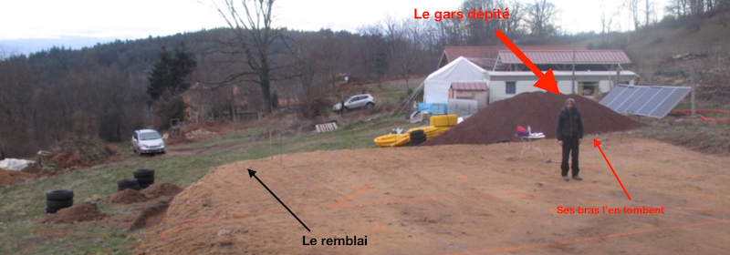
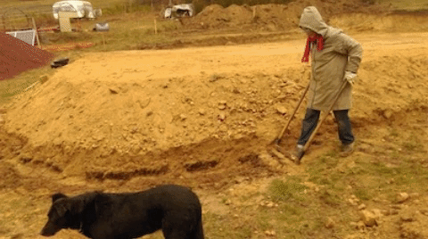
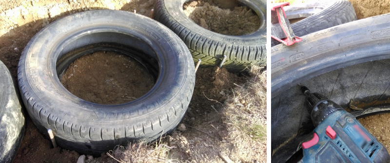
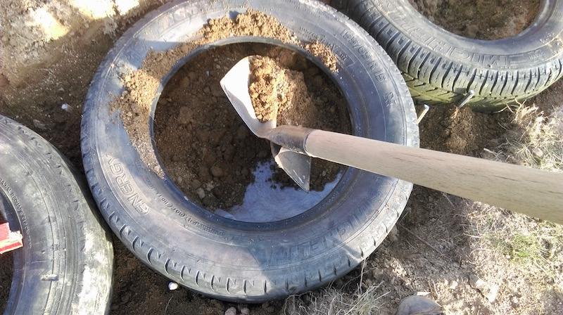
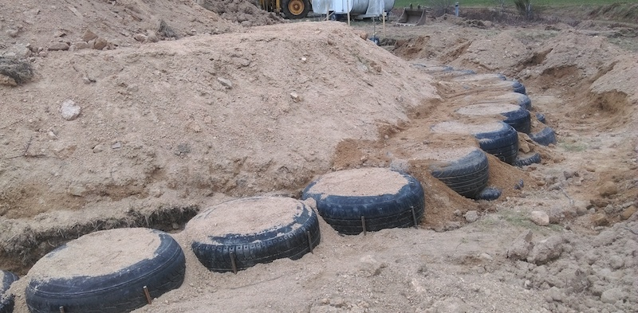
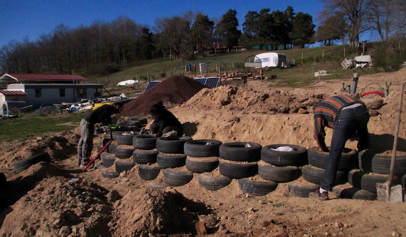
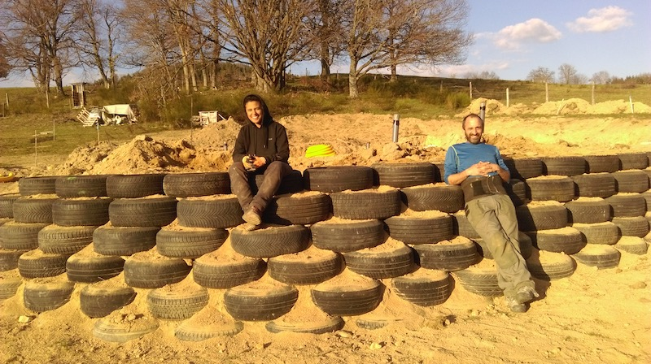

Le terrassement ne s’est pas passé comme on avait prévu (voir ci-dessous le gars dépité), on a eu un gros remblai de plus d’un mètre, et il faut le retenir pour que la plateforme ne s’affaisse pas, surtout qu’on a des piliers de charpente à ancrer pas loin du coin du remblai. Il faut donc un mur de soutènement…

Les options qu’on avait :
-
Le bon vieux mur en parpaing, avec des ferrailles horizontales, verticales, des fondations, et quelques dizaines de bétonnières, on adore… même si le collègue nous dit “y’en a pour quelques jours », on sait très bien qu’à notre rythme, y’en a pour 2 ou 3 semaines
-
Une solution sans (gros) achat, sans béton, facile à mettre en oeuvre ? Mais oui :) les gars des earthship le font bien, eux, allez DuckDuckGo est notre ami (« tyre wall »), on trouve des bons retours d’expérience et des vidéos d’américains allumés qui décrivent bien la méthode, qu’on va vous résumer ici.
Pour commencer, il faut une sorte de fondation, au moins un sol dur sur lequel on va poser le premier rang de pneus. On a de la chance chez nous (ou pas) à 30 cm sous l’herbe on a du granit décomposé (on appelle ça le « gore » ici) et c’est vraiment dur. j’attrape ma grelinette™ et creuse le lit du mur. Bim.

Ensuite** les pneus. Les garagistes doivent payer pour s’en débarrasser, donc n’ayez pas peur d’aller faire le tour des garages du coin avec votre remorque/camionette. Mais attention, si c’est pas juste pour remblayer le coin du potager, essayer de prendre des séries de pneus identiques (185/15 par exemple , suivez ce qui est écrit dessus) pour pouvoir faire des rangs de même niveau**.
En s’aidant d’une règle et d’un niveau, on pose son premier rang et on coince les pneus avec 4 fers à béton (diamètre 10mm) de 50cm de long, enfoncé à la masse. Ça devrait plus bouger.

Une fois le premier rang de pneus posé bien de niveau, on les visse entre eux avec des vis inoxydables si possible, qui vont se ficher dans la ferraille contenue dans le revêtement du pneu.
Ensuite on passe au vrai boulot, le remplissage des pneus.
Vous pouvez utiliser de la terre, avec ou sans cailloux dedans, du sable, du gore, bref, ce que vous avez sous la main. Le faire uniquement avec des cailloux c’est possible, mais ce sera plus dur de remplir complètement le pneu.

-
Après avoir vissés les pneus entre eux, on commence par mettre un fond dans le pneu : un bout de carton ou bien du géotextile (50x50cm) et on remplit au départ les cotés pour bien caler le fond qu’on vient de placer.
-
Toujours à la pelle, on va remplir entièrement le pneu en poussant vers les bords. C’est le secret du truc : on veut remplir le seau entièrement et surtout l’intérieur du coté bombé au-dessus.
-
On pousse maintenant la terre dans le rebord du haut, au pied ou à la main, en prenant la terre qui est au centre. En compactant tout le long du bord, on peut remettre plusieurs fois de la terre.
-
On insiste encore : il suffit d’appuyer sur le bord extérieur, en haut du pneu pour voir s’il reste du vide. On peut maintenant utiliser une pioche pour faire levier, soulever un peu le rebord et enfoncer encore de la terre, cette fois à la massette, faut taper fort ! On fait le tour et on vérifie à nouveau si on trouve du vide au bord en appuyant

Passons au rang suivant : on pose nos pneus de niveau et là on va les visser entre eux horizontalement mais aussi verticalement aux deux pneus dessous (on les mets en quinconce, comme des briques). Et on remplit…
En une journée, seul, on peut faire une dizaine de pneus. Ça se fait pas en un jour. Mais tout bien compté, le chantier parpaing-bétonnière est pas si simple non plus, sauf quand on est maçon.

A plusieurs ça va plus vite !
C’est nos premiers volontaires de Twiza, Seb « Petit Lapin » et Maya, avec notre apiculteur favori, David, qui m’ont aidé pour finir les 6 rangs du mur. Bravo à eux !

Commentaires